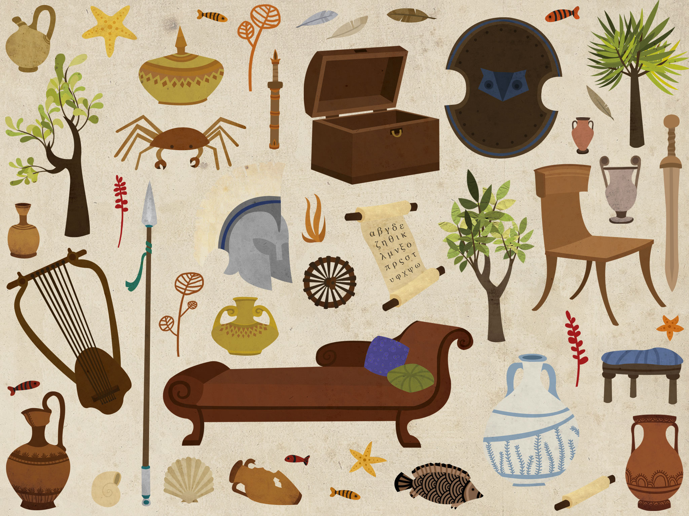

La Terre et le Ciel
Est-ce que la Terre est vraiment plate ? Est ce que le Ciel la recouvre comme le croyaient les anciens ? Pas du tout...


Vénus / Aphrodite
« Vénus » est le nom latin d’Aphrodite, la déesse de l’amour, qui est née des flots. En tant que figure féminine idéale, elle a été représentée au fil des siècles par des artistes aux sensibilités très différentes.


Les étapes de la création du monde
Bien des choses restent à découvrir sur l'origine de notre univers. Les scientifiques ne sont pas tous d'accord. Mais la plupart s'accordent sur la théorie du Big Bang.


La création du monde dans les autres civilisations
Toutes les civilisations se sont interrogées sur la façon dont le monde avait commencé. En voici, rapidement résumés, quelques exemples :